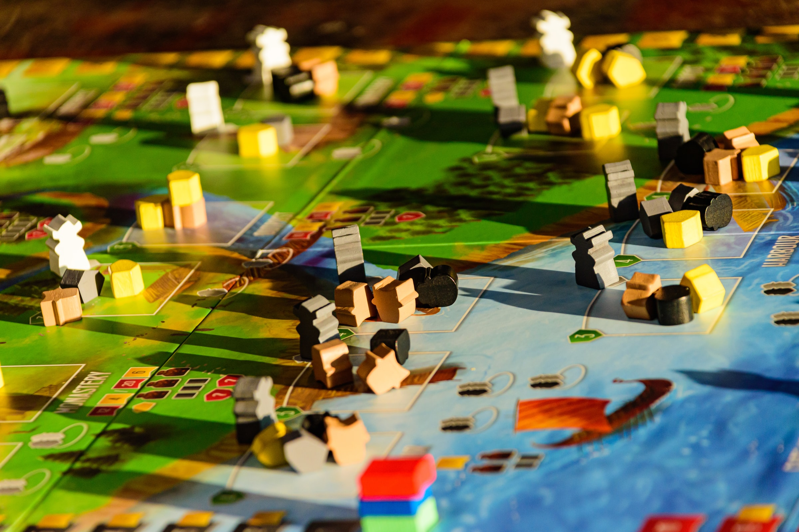

This app seeks to end the constant shuffle of board games while you're trying to find the right game to play with your group. Existing solutions are often too simple, neglecting useful features like categorization and advanced searching.
Board Game Organizer ties into the Board Game Atlas API, so you never have to worry about not finding your game in our database. It also allows users to filter by mechanics, which can be useful for finding the right game for the right group.
With this app you can input your games, rate them, add comments, and categorize them based on your preferences. Then, when you have your group over to play a game, but haven't figured out which one, you can search based on the criteria you created. In the comments, you could enter what group likes to play the game or what kind of playstyle it is, then search by that criteria to find the perfect game for that night.
Board Game Geeks is arguably the biggest board game website. It includes a feature that allows you to enter your games into a virtual collection and add custom comments. The difference lies in the features and presentation. Board Game Organizer will allow you to browse the games in your library in an easier way, thanks to the categorization.
